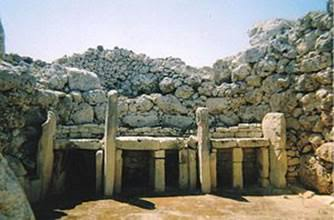
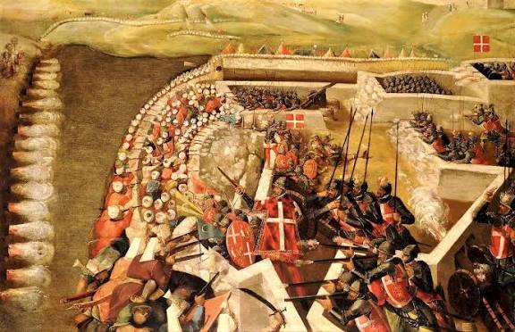
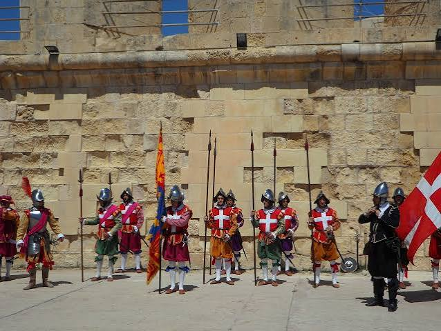

JorneyToPeace
A República de Malta é um conjunto de ilhas (Malta, Gozo e Comino) ao extremo sul da Itália no coração do Mar Mediterrâneo. Com uma localização privilegiada e estratégica para as rotas comerciais marítimas, sua história pode ser traçada há vários milênios. Dados históricos e arqueológicos indicam há quase 7.000 anos de história desde os primeiros habitantes das ilhas maltesas. Após invasões de vários povos e civilizações, como os fenícios, os gregos (que inclusive primeiramente deram o nome à ilha de "Melite", ou seja, "ilha do doce mel"), os romanos que alteraram o nome para "Melita", os otomanos e, por fim, os ingleses, Malta representa uma fonte de inúmeros legados históricos e encruzilhadas culturais. Sua capital Valletta está urbanamente estruturada em um traçado retangular de fácil locomoção e data do século XVI. Como Estado soberano, Malta é bastante jovem tendo adquirido sua independência do Reino Unido em 1964 (21 de setembro) - o mesmo ano que ingressa na ONU. Uma década depois, transforma-se em uma república parlamentarista (13 de dezembro de 1974). A Conferência de Cúpula de Malta entre o Presidente dos EUA, George Bush, e o Premier Mikhail Gorbachev, em dezembro de 1989, é marco histórico por ter sido lá declarado o fim da Guerra Fria. Em 2004, Malta ingressa na União Europeia e, em 2008, adota o euro como moeda, retirando a antiga lira maltesa de cirulação. É um país, portanto, com raízes profundas no passado que olha para o futuro com determinação, proatividade e certeza de novas conquistas.

National War Museum - Fort St Elmo - Valletta

Imagens do Cerco de Malta

Soldados com o traje de soldados de Malta